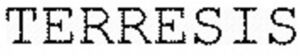

Trade Mark Journal No.2025/047 21 November 2025
WO0000001885204 (1,5,7,19,31,35,40)
Office of origin: France
Date of International Registration:8 September 2025
Date of designation in the UK:
8 September 2025

International priority date claimed: 16 April 2025
(France)
(5139692)
- Class 1
- Chemical products for agriculture; mineral fertilizing products for use in agriculture, horticulture and forestry; fertilizers; fertilizing products; soil conditioning products; products intended for plant nutrition and cultivation (nutritional substances for plants); nutritional substances for plants; Mineral sun-protection products for use in agriculture, horticulture and forestry; magnesium additives for animal and plant nutrition; Magnesium additive to be integrated in foodstuffs for animals; magnesium additive to be integrated in food supplements for animals; magnesium additive intended for incorporation into pharmaceutical preparations, nutraceuticals, cosmetics; magnesium additive for cement; Alkaline product for the desulfurization of combustion gases; magnesium oxide; magnesium carbonate; magnesium hydroxide; magnesium sulphate; magnesium sulfite; magnesium nitrate; magnesium sulfonate; magnesium chloride; magnesium acetate; magnesium salts; synthetic catalysts; biochemical catalysts; chemical catalysts; catalysts for chemical and biochemical processes; fireproofing preparations; fire-retardant chemicals for use in the manufacture of fire-resistant polymers; chemical additives for polymers; catalysts for use in the manufacture of synthetic materials, rubbers and polymers; substances for soil stabilization; mineral complex for soil stabilization; waste water treatment chemicals for industrial use; magnesium-based reagent for wastewater treatment; chemical products used as additives for cement.
- Class 5
- Veterinary preparations; food supplements for animals; magnesium-based food supplements for animals; fungicides.
- Class 7
- Industrial robots; industrial robots used for applying refractory products.
- Class 19
- Refractory materials, not of metal; refractory bricks, not of metal; ceramic refractory mass; ceramic refractory weights for lining metallurgical furnaces; magnesia cement; magnesium oxychloride cement for abrasives; aggregates for concrete; magnesia cement; refractory cement.
- Class 31
- Raw agricultural, horticultural and forestry products; products for animal litter; animal foodstuffs; non-medicated animal feeds based on trace elements.
- Class 35
- Retail and wholesale services for the following goods: mineral fertilizing products for use in agriculture, horticulture and forestry, manures, fertilizers, soil conditioners, products intended for plant nutrition and cultivation, nutritional substances for plants, mineral sun-protection products for use in agriculture, horticulture and forestry, magnesium additives for animal and plant nutrition, magnesium additive intended for integration into animal foods, magnesium additive intended for integration into animal food supplements, magnesium additive intended for integration into pharmaceutical preparations, nutraceuticals, cosmetics, magnesium additive for cement, alkaline product for the desulfurization of combustion gases, magnesium oxide, magnesium carbonate, magnesium hydroxide, magnesium sulphate, magnesium sulfite, magnesium nitrate, magnesium sulfonate, magnesium chloride, magnesium acetate, magnesium salts, synthetic catalysts, biochemical catalysts, chemical catalysts, catalysts for chemical and biochemical processes, fire retardants, fire-retardant chemicals for the manufacture of fire-resistant polymers, chemical additives for polymers, catalysts for use in the manufacture of synthetic materials, rubbers and polymers, soil stabilization substances, mineral complex for soil stabilization, chemicals for waste water treatment for industrial use, magnesium-based reagent for waste water treatment, chemicals used as additives for cement, veterinary preparations, food supplements for animals, magnesium-based food supplements for animals, fungicides, industrial robots, industrial robots used for the application of refractory products, refractory material, non-metal refractory bricks, ceramic refractory mass, ceramic refractory masses for coating metallurgical furnaces, magnesia cement, magnesium oxychloride cement for abrasives, aggregates for use in concrete, Sorel cement, refractory cement, agricultural, horticultural and forestry products, products for animal litter, foods for animals, non-medicated foods for animals based on trace elements; commercial management advice, marketing and promotional services for the distribution of animal and plant nutrition products, magnesium-based products, refractory material.
- Class 40
- Treatment and processing services for a magnesium based material; treatment and processing of ores; Heat treatment of ores; extraction of minerals; magnesium carbonate calcination services.
TIMAB MAGNESIUM
Representative: Madame DEVEVEY Bénédicte PROMARK, 36 rue de Penthièvre, F-75008 PARIS, FRANCE